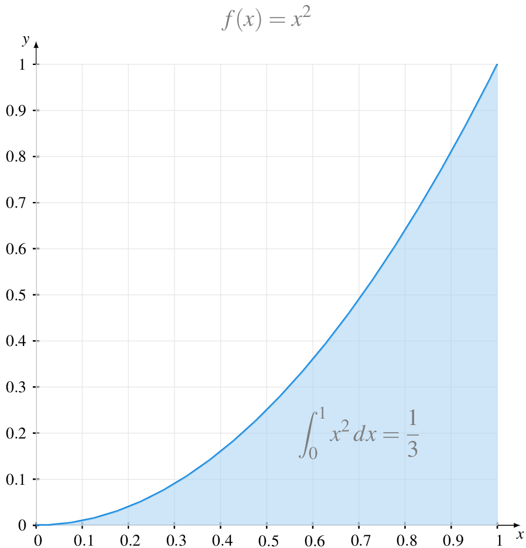
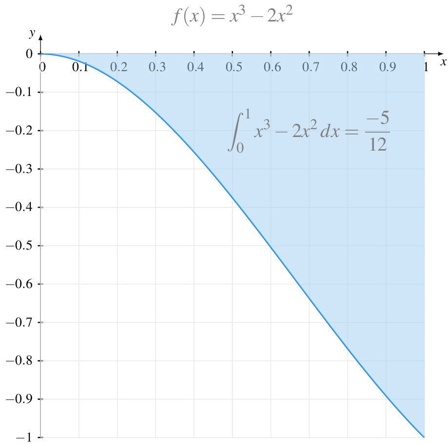

8 Integrales de funciones
Ejercicio 8.1 Calcular las sumas inferior y superior de Riemann de las siguientes funciones en el intervalo \([0,1]\), tomando particiones de igual tamaño con \(n\) puntos, desde \(n=2\) hasta \(n=5\).
\(f(x) = 1-x\)
\(g(x) = x^2\)
\(h(x) = e^{-x}\)
Tomaremos particiones de igual tamaño \(P_n=\{x_0,x_1,\ldots,x_n\}\) con \(x_i=\frac{i}{n}\) para \(i=0,1,\ldots, n\).
\(n\) \(s(f,P_n)\) \(S(f,P_n)\) 2 0.25 0.75 3 1/3 2/3 4 0.375 0.625 5 0.4 0.6 \(n\) \(s(f,P_n)\) \(S(f,P_n)\) 2 0.125 0.625 3 0.1852 0.5185 4 0.2188 0.4687 5 0.24 0.44 \(n\) \(s(f,P_n)\) \(S(f,P_n)\) 2 0.4872 0.8033 3 0.5326 0.7433 4 0.5564 0.7144 5 0.571 0.6974
Ejercicio 8.2 Usar las sumas inferiores y superiores de Riemann para dar una aproximación del área contenida entre la gráfica de la función \(\operatorname{sen}(x)\) y el eje \(x\) en el intervalo \([0,\pi/2]\), usando 4 rectángulos de igual base.
Tomando la partición \(P=\{0, \pi/8, \pi/4, 3\pi/4, \pi/2\}\) se tiene
\[\begin{align*} s(f,P) &= \operatorname{sen}(0)\frac{\pi}{8} + \operatorname{sen}\left(\frac{\pi}{8}\right) \frac{\pi}{8} + \operatorname{sen}\left(\frac{\pi}{4}\right) \frac{\pi}{8} + \operatorname{sen}\left(\frac{3\pi}{8}\right) \frac{\pi}{8} = 0.7908.\\ S(f,P) &= \operatorname{sen}\left(\frac{\pi}{8}\right) \frac{\pi}{8} + \operatorname{sen}\left(\frac{\pi}{4}\right) \frac{\pi}{8} + \operatorname{sen}\left(\frac{3\pi}{8}\right) \frac{\pi}{8} + \operatorname{sen}\left(\frac{\pi}{2}\right) \frac{\pi}{8} = 1.1835. \end{align*}\]
Ejercicio 8.3 Calcular la integral inferior y superior de Riemann de la función \(f(x)=x^2\) en el intervalo \([0,1]\). ¿Es una función integrable Riemann?
Usar las fórmulas \(\sum_{n=1}^n i = \frac{n(n+1)}{2}\) y \(\sum_{i=1}^n i^2 = \frac{n(n+1)(2n+1)}{6}\).
Para calcular las sumas inferiores y superiores de Riemann utilizaremos la partición \(P_n = \{x_0, x_1,\ldots, x_n\}\) con \(x_i = \frac{i}{n}\) para \(i=0,1,\ldots, n\).
Como \(f(x)=x^2\) es una función monótona creciente en \([0,1]\), el mínimo en cada subintervalo se alcanzará en el extremo inferior y el máximo en el superior.
\[\begin{align*} s(f,P_n) &= \sum_{i=1}^n f(x_{i-1})(x_i-x_{i-1}) = \sum_{i=1}^n \left(\frac{i-1}{n}\right)^2 \frac{1}{n}\\ & = \frac{1}{n^3} \sum_{i=1}^n (i^2-2i+1) = \frac{1}{n^3} \left(\sum_{i=1}^n i^2 - 2\sum_{i=1}^n i + \sum_{i=1}^n 1\right)\\ & = \frac{1}{n^3} \left(\frac{n(n+1)(2n+1)}{6} - 2\frac{n(n+1)}{2} + n\right) = \frac{2n^3-3n^2+n}{6n^3}\\ S(f,P_n) &= \sum_{i=1}^n f(x_{i})(x_i-x_{i-1}) = \sum_{i=1}^n \left(\frac{i}{n}\right)^2 \frac{1}{n}\\ & = \frac{1}{n^3} \sum_{i=1}^n i^2 = \frac{1}{n^3} = \frac{2n^3+3n^2+n}{6n^3} \end{align*}\]
Para calcular las integrales inferior y superior, basta con calcular el límite cuando \(n\to\infty\) de las sumas inferiores y superiores, respectivamente.
\[\begin{align*} \underline{\int_0^1} x^2 & = \lim_{n\to\infty} s(f,P_n) = \lim_{n\to\infty} \frac{2n^3-3n^2+n}{6n^3} = \frac{1}{3}\\ \overline{\int_0^1} x^2 & = \lim_{n\to\infty} S(f,P_n) = \lim_{n\to\infty} \frac{2n^3+3n^2+n}{6n^3} = \frac{1}{3} \end{align*}\]
Como \(\underline{\int_0^1} x^2 = \overline{\int_0^1} x^2=\frac{1}{3}\), la función \(f(x)=x^2\) es integrable Riemann en \([0,1]\) y \(\int_0^1 x^2\, dx = \frac{1}{3}\).

Ejercicio 8.4 Calcular la integral de Riemann de la función \(f(x)=x^3-2x^2\) en el intervalo \([0,1]\).
Usar la fórmula \(\sum_{i=1}^n i^3 = \left(\frac{n(n+1)}{2}\right)^2\)
Aplicando la linealidad de la integral, se tiene que
\[ \int_0^1 x^3-2x^2\,dx = \int_0^1 x^3\, dx -2\int_0^1 x^2\, dx \]
Para calcular \(\int_0^1 x^3\,dx\) seguiremos el mismo procedimiento del ejercicio anterior. Tomando la partición \(P_n = \{x_0, x_1,\ldots, x_n\}\) con \(x_i = \frac{i}{n}\) para \(i=0,1,\ldots, n\).
Como \(f(x)=x^3\) es una función monótona creciente en \([0,1]\), el mínimo en cada subintervalo se alcanzará en el extremo inferior y el máximo en el superior.
\[\begin{align*} s(f,P_n) &= \sum_{i=1}^n f(x_{i-1})(x_i-x_{i-1}) = \sum_{i=1}^n \left(\frac{i-1}{n}\right)^3 \frac{1}{n}\\ & = \frac{1}{n^4} \sum_{i=1}^n (i^3-3i^2+3i-1) = \frac{1}{n^3} \left(\sum_{i=1}^n i^3 - 3\sum_{i=1}^n i^2 + 3\sum_{i=1}^n i - \sum_{i=1}^n 1\right)\\ & = \frac{1}{n^4} \left(\left(\frac{n(n+1)}{2}\right)^2 - 3\frac{n(n+1)(2n+1)}{6} + 3\frac{n(n+1)}{2} - n\right) \\ & = \frac{n^4-2n^3+n^2}{4n^4}\\ S(f,P_n) &= \sum_{i=1}^n f(x_{i})(x_i-x_{i-1}) = \sum_{i=1}^n \left(\frac{i}{n}\right)^3 \frac{1}{n} = \frac{1}{n^4} \sum_{i=1}^n i^3 \\ & = \frac{1}{n^4} \left(\frac{n(n+1)}{2}\right)^2 = \frac{n^4+2n^3+n^2}{4n^4} \end{align*}\]
Para calcular las integrales inferior y superior, basta con calcular el límite cuando \(n\to\infty\) de las sumas inferiores y superiores, respectivamente.
\[\begin{align*} \underline{\int_0^1} x^3 & = \lim_{n\to\infty} s(f,P_n) = \lim_{n\to\infty} \frac{n^4-2n^3+n^2}{4n^4} = \frac{1}{4}\\ \overline{\int_0^1} x^2 & = \lim_{n\to\infty} S(f,P_n) = \lim_{n\to\infty} \frac{n^4+2n^3+n^2}{4n^4} = \frac{1}{4} \end{align*}\]
Como \(\underline{\int_0^1} x^2 = \overline{\int_0^1} x^2=\frac{1}{4}\), la función \(f(x)=x^3\) es integrable Riemann en \([0,1]\) y \(\int_0^1 x^3\, dx = \frac{1}{4}\).
Así pues, utilizando el resultado del ejercicio anterior se tiene
\[ \int_0^1 x^3-2x^2\,dx = \int_0^1 x^3\, dx -2\int_0^1 x^2\, dx = \frac{1}{4} - 2\frac{1}{3} = \frac{-5}{12} \]

Ejercicio 8.5 Calcular la integral de Riemann de la función \(f(x)=\frac{1}{x}\) en el intervalo \([a,b]\).
Usar la sucesión de particiones \((P_n)_{n=1}^\infty\) con \(P_n=\{x_0,x_1,\ldots,x_n\}\) con \(x_i=a(1+c)^i\) para \(i=1,\ldots,n\).
Sea \(P_n=\{x_0,x_1,\ldots,x_n\}\) con \(x_i=a(1+c)^i\) para \(i=1,\ldots,n\) una partición del intervalo \([a,b]\). Como el último punto de la partición debe ser \(b\), se debe cumplir \(a(1+c)^n = b\), de donde se deduce que \(c=\left(\frac{b}{a}\right)^{1/n}-1\).
Calcularemos la suma superior de Riemann de \(f\) en el intervalo \([a,b]\). Como \(f(x)=\frac{1}{x}\) es una función monótona decreciente, se alcanza el máximo en el extremo inferior de cada subintervalo. Por tanto, se tiene
\[\begin{align*} S(f,P_n) & = \sum_{i=1}^n f(x_{i-1}) (x_i-x_{i-1}) = \sum_{i=1}^n \frac{1}{x_{i-1}} (a(1+c)^i-a(1+c)^{i-1}) \\ & = \sum_{i=1}^n \frac{1}{a(1+c)^{i-1}} (ca(1+c)^{i-1}) = \sum_{i=1}^n c = nc = n\left(\left(\frac{b}{a}\right)^{1/n}-1\right) \\ & = \frac{\left(\frac{b}{a}\right)^{1/n}-1}{\frac{1}{n}} \end{align*}\]
Para calcular la integral superior de Riemann, basta con calcular el límite de las sumas superiores cuando \(n\to\infty\).
\[\begin{align*} \overline{\int_a^b}f & = \lim_{n\to\infty} S(f,P_n) = \lim_{n\to\infty} \frac{\left(\frac{b}{a}\right)^{1/n}-1}{\frac{1}{n}} \\ & = \lim_{x\to 0} \frac{\left(\frac{b}{a}\right)^x-1}{x} \tag{$x=\frac{1}{n}$}\\ & = \lim_{n\to 0} \left(\frac{b}{a}\right)^x \ln\left(\frac{b}{a}\right) = \ln(b) - \ln(a) \tag{L'Hôpital}. \end{align*}\]
Del mismo modo se puede probar que \(\underline{\int_a^b} f = \ln(b) - \ln(a)\), por lo que la función \(f(x)=\frac{1}{x}\) es integrable Riemann en \([a,b]\) y \(\int_a^b \frac{1}{x}\,dx = \ln(b)-\ln(a)\).
Ejercicio 8.6 Demostrar que si \(f\) es una función integrable Riemann en un intervalo \(I=[a,b]\), se puede calcular \(\int_a^b f(x)\,dx\) mediante sumas de Riemann tomando como altura de los rectángulos el valor de la función en cualquier punto de los subintervalos de la partición.
Si \(f\) es una función integrable en \(I=[a,b]\), por el criterio de integrabilidad de Riemann, dado \(\varepsilon>0\) existe una partición \(P=\{x_0,x_1,\ldots,x_n\}\) tal que \(S(f,P)-s(f,P)<\varepsilon\), es decir, existe una sucesión de particiones \((P_n)_{n=1}^\infty\) tal que \(\lim_{n\to\infty} S(f,P_n)-s(f,P_n)=0\).
Sea \(x_i^*\) cualquier valor del intervalo \([x_{i-1},x_i]\). Como \(s(f,P_n) = \sum_{i=1}^n m_i (x_i-x_{i-1})\) con \(m_i=\inf\{f(x):x\in [x_{i-1},x_i]\}\) y \(S(f,P_n) = \sum_{i=1}^n M_i (x_i-x_{i-1})\) con \(M_i=\sup\{f(x):x\in [x_{i-1},x_i]\}\), se cumple que
\[ s(f,P_n) = \sum_{i=1}^n m_i (x_i-x_{i-1}) \leq \sum_{i=1}^n f(x_i^*) (x_i-x_{i-1}) \leq \sum_{i=1}^n M_i (x_i-x_{i-1}) = S(f,P_n) \]
Por tanto,
\[ \int_a^b f(x)\,dx = \lim_{n\to\infty} s(f,P_n) = \lim_{n\to\infty} \sum_{i=1}^n f(x_i^*) (x_i-x_{i-1}) = \lim_{n\to\infty} S(f,P_n). \]
Ejercicio 8.7 Demostrar que \(1\leq \displaystyle \int_{-1}^1 \frac{1}{1+x^2}\,dx \leq 2\).
Por las propiedades de la integral (ver corolario), sabemos que
\[ m(b-a)\leq \int_a^b f(x)\,dx \leq M(b-a), \]
donde \(m\) y \(M\) son el mínimo y el máximo de la función \(f\) en el intervalo \([a,b]\).
En el caso concreto del ejercicio se tiene que \(f'(x) = \frac{-2x}{x^4+2x^2+1}\) que se solo se anula en \(x=0\). Estudiando el signo de la derivada a la izquierda y la derecha del punto crítico se concluye fácilmente que \(f\) alcanza un máximo relativo en este punto y \(f(0)=1\). Por otro lado \(f(-1)=f(1)=\frac{1}{2}\), por lo que se puede concluir que el mínimo absoluto de la función en \([-1,1]\) es \(m=\frac{1}{2}\) y el máximo absoluto \(M=1\). Y aplicando el corolario anterior se tiene
\[ \frac{1}{2}(1-(-1)) = 1 \leq \int_a^b \frac{1}{1+x^2}\,dx \leq 1(1-(-1)) = 2. \]
Ejercicio 8.8 Demostrar que si \(f\) es una función acotada en el intervalo \([a,b]\) que es continua en \([a,b]\setminus\{c\}\), con \(c\in[a,b]\), entonces \(f\) es integrable Riemann en \([a,b]\)
Ejercicio 8.9 Calcular las siguientes integrales definidas
\(\int_1^2 x^4-2x\,dx\)
\(\int_0^{\pi} \operatorname{sen}(x)\, dx\)
\(\int_{-1}^1 \frac{1}{1+x^2}\,dx\)
\(\int_{-2}^2 \sqrt{4-x^2}\,dx\)
\(\int_1^e \ln(x)\,dx\)
\(\int_1^2 \frac{x+1}{x^3+x^2+x}\,dx\)
\(\int_0^{\pi/2} \cos(x)^2\, dx\)
\(\int_1^2 \frac{1+\sqrt{x}}{\sqrt{x}}\,dx\)
\(\int_{-\pi/2}^{\pi/2} e^x\cos(x)\,dx\)
\(\int_{0}^{\pi/4}\frac{tg(x)^3}{\cos(x)^2}\,dx\)
\(\int_1^2 x^4-2x\,dx = \left[\frac{x^5}{5}-x^2\right]_1^2 = \frac{16}{5}\).
\(\int_0^{\pi} \operatorname{sen}(x)\, dx = \left[-\cos(x)\right]_0^\pi = 2\).
\(\int_{-1}^1 \frac{1}{1+x^2}\,dx = \left[\operatorname{arctg}\right]_{-1}^1 = \frac{\pi}{2}\).
\(\int_{-2}^2 \sqrt{4-x^2}\,dx = \left[2\operatorname{arcsen}\left(\frac{x}{2}\right)+\frac{x}{2}\sqrt{4-x^2}\right]_{-2}^2 = 2\pi\).
\(\int_1^e \ln(x)\,dx = \left[x\ln(x)-x\right]_1^e = 1\).
\(\int_1^2 \frac{x+1}{x^3+x^2+x}\,dx = \left[\ln|x| - \frac{1}{2}\ln|x^2+x+1|+\frac{1}{\sqrt{3}}\operatorname{arctg}\left(\frac{2x+1}{\sqrt{3}}\right) \right]_1^2 \approx 0.0782.\)
\(\int_0^{\pi/2} \cos(x)^2\, dx = \left[\frac{x}{2}+\frac{\operatorname{sen}(2x)}{4}\right]_0^{\pi/2} \approx 0.8172.\)
\(\int_1^2 \frac{1+\sqrt{x}}{\sqrt{x}}\,dx = \left[x+2\sqrt{x}\right]_1^2 = -2\sqrt{3}+5\).
\(\int_{-\pi/2}^{\pi/2} e^x\cos(x)\,dx = \left[e^x\left(\frac{\operatorname{sen}(x)+\cos(x)}{2}\right)\right]_{-\pi/2}^{\pi/2} = \frac{e^{-\pi/2}+e^{\pi/2}}{2}\).
\(\int_{0}^{\pi/4}\frac{tg(x)^3}{\cos(x)^2}\,dx = \left[\frac{\operatorname{tg}(x)^4}{4}\right]_0^{\pi/4} = \frac{1}{4}\).
Ejercicio 8.10 Calcular el área encerrada entre la gráfica de las siguientes funciones y el eje \(x\) en los intervalos dados.
\(f(x) = \ln\left(\frac{x}{2}\right)\) en \([1,2]\).
\(g(x) = \cos(x)\) en \([0,2\pi]\).
\(h(x) = xe^{-x}\) en \([-1,2]\).
\(i(x) = \frac{x}{\sqrt{3-2x-x^2}}\) en \([-1,1]\).
\(\int_1^2 \left|\ln\left(\frac{x}{2}\right)\right|\,dx = -\left[x\ln\left(\frac{x}{2}\right)-x\right]_1^2 = 1-\ln(2)\).
\[\begin{align*} \int_0^{2\pi} |\cos(x)|\,dx &= \int_0^{\pi/2}\cos(x)\,dx -\int_{\pi/2}^{3\pi/2}\cos(x)\,dx + \int_{3\pi/2}^{2\pi}\cos(x)\,dx \\ &= \left[\operatorname{sen}(x)\right]_0^{\pi/2} - \left[\operatorname{sen}(x)\right]_{\pi/2}^{3\pi/2} + \left[\operatorname{sen}(x)\right]_{3\pi/2}^{2\pi} = 1 + 2 + 1. \end{align*}\]
\[\begin{align*} \int_{-1}^2 |xe^{-x}|\,dx &= -\int_{-1}^0 xe^{-x}\, dx + \int_{0}^2 xe^{-x}\, dx \\ &= -\left[-e^{-x}(1+x)\right]_{-1}^0 + \left[-e^{-x}(1+x)\right]_0^2 = 1 + 1-\frac{3}{e^2} = 2-\frac{3}{e^2} \end{align*}\]
\[\begin{align*} \int_{-1}^1 \left|\frac{x}{\sqrt{3-2x-x^2}}\right|\,dx &= -\int_{-1}^0 \frac{x}{\sqrt{3-2x-x^2}}\,dx + \int_{0}^1 \frac{x}{\sqrt{3-2x-x^2}}\,dx \\ &= -\left[\sqrt{3-2x-x^2}-\operatorname{arcsen}\left(\frac{x+1}{2}\right)\right]_{-1}^0\\ &+ \left[\sqrt{3-2x-x^2}-\operatorname{arcsen}\left(\frac{x+1}{2}\right)\right]_{0}^1\\ &= \frac{\pi}{6}+\sqrt{3}-2 -\frac{\pi}{3}+\sqrt{3} = \frac{-\pi}{6}+2\sqrt{3}-2 \end{align*}\]
Ejercicio 8.11 Calcular el área comprendida entre las funciones \(f\) y \(g\) en los intervalos dados en los siguientes apartados:
\(f(x)=\cos(x)\) y \(g(x)=-\cos(x)\) en \([0,2\pi]\).
\(f(x)=x^2\) y \(g(x)=\sqrt{x}\) en \([0,2]\).
\(f(x)=\operatorname{tg}(x)\) y \(g(x)=x\) en \([-1,1]\).
\(f(x)= 2^{-x}\) y \(g(x)=\frac{x^2}{x^3+1}\) en \([0,2]\).
\[\begin{align*} \int_0^{2\pi} |\cos(x)+\cos(x)|\,dx &= \int_0^{\pi/2} 2\cos(x)\,dx - \int_{\pi/2}^{3\pi/2} 2\cos(x)\,dx +\int_{3\pi/2}^{2\pi} 2\cos(x)\,dx\\ &= \left[2\operatorname{sen}(x)\right]_{0}^{\pi/2} - \left[2\operatorname{sen}(x)\right]_{\pi/2}^{3\pi/2} + \left[2\operatorname{sen}(x)\right]_{3\pi/2}^{2\pi}\\ &= 2 +4 + 2 = 8 \end{align*}\]
\[\begin{align*} \int_0^2 |x^2-\sqrt{x}|\,dx &= \int_{0}^1 \sqrt{x}-x^2\,dx + \int_1^2 x^2-\sqrt{x}\,dx \\ &= \left[\frac{2}{3}\sqrt{x^3}-\frac{x^3}{3}\right]_0^1 + \left[\frac{x^3}{3}-\frac{2}{3}\sqrt{x^3}\right]_1^2 \\ &= \frac{1}{3}-\frac{4}{3}\sqrt{2}+3 = \frac{-4\sqrt{2}+10}{3}. \end{align*}\]
\[\begin{align*} \int_{-1}^1 |\operatorname{tg}(x)-x|\,dx &= \int_{-1}^0 x-\operatorname{tg}(x)\,dx + \int_0^1 \operatorname{tg}(x)-x\,dx \\ &= \left[\frac{x^2}{2}+\ln|\cos(x)|\right]_{-1}^1 + \left[-\frac{x^2}{2}-\ln|\cos(x)|\right]_0^1 \\ &= 0.1156 + 0.1156 = 0.2313. \end{align*}\]
\[\begin{align*} \int_0^2 \left|2^{-x}-\frac{x^2}{1+x^3}\right|\,dx &= \int_0^1 2^{-x}-\frac{x^2}{1+x^3}\,dx + \int_1^2 \frac{x^2}{1+x^3}-2^{-x}\,dx\\ &= \left[\frac{-2^{-x}}{\ln(2)}-\frac{\ln|x^3+1|}{3}\right]_0^1 + \left[\frac{\ln|x^3+1|}{3}+\frac{2^{-x}}{\ln(2)}\right]_1^2 \\ &= 0.4903 + 0.1407 = 0.631. \end{align*}\]
Ejercicio 8.12 Calcular el área encerrada entre la parábola \(y=2x-x^2\) y la recta \(y=2x-1\).
Igualando las dos ecuaciones obtenemos los puntos donde se cortan la parábola y la recta.
\[ 2x-x^2=2x-1 \Leftrightarrow x^2-1 = 0 \Leftrightarrow x=\pm 1. \]
Así pues, el área encerrada entre la parábola y la recta es
\[\begin{align*} \int_{-1}^1 |2x-x^2 - (2x-1)|\,dx &= \int_{-1}^1 -x^2+1\,dx = \left[-\frac{x^3}{3}+x\right]_{-1}^1 \\ &= -\frac{1}{3}+1-\frac{1}{3}+1 = \frac{4}{3}. \end{align*}\]
Ejercicio 8.13 Para evaluar un test diagnóstico se suele utilizar la curva ROC (Receiver Operating Characteristics) que resulta de representar la razón de verdaderos positivos (sensibilidad) frente a la razón de falsos positivos (1-especificidad) para los diferentes umbrales de positivo del test. Esta curva se representa en el cuadrante \([0,1]\times [0,1]\) y está siempre por encima de la recta \(y=x\) que representa un diagnóstico aleatorio. El área por debajo de la curva ROC se conoce como AUC (area under the curve), y cuanto mayor sea, mejor es el test diagnóstico.
Se dispone de dos test diagnósticos para detectar el virus SARS-CoV, el primero con una curva ROC \(f(x)=\sqrt{x}\) y el segundo con una curva \(g(x)=-x^2+2x\). ¿Qué test diagnóstico es mejor?
La medida AUC para el primer test diagnostico es
\[ \int_0^1 \sqrt{x}\,dx = \left[\frac{2}{3}x^{3/2}\right]_0^1 = \frac{2}{3}. \]
Y para el segundo test diagnóstico es
\[ \int_0^1 -x^2+2x\,dx = \left[-\frac{x^3}{3}+x^2\right]_0^1 = -\frac{1}{3} + 1 = \frac{2}{3}. \]
Por tanto, ambos test tienen la misma AUC y desde este punto de vista serían iguales.
Ejercicio 8.14 La curva de Lorenz se utiliza en Economía para representar la distribución relativa de los ingresos o la riqueza de una población. Esta curva se representa siempre en el cuadrante \([0,1]\times [0,1]\) del plano y cada punto \((x,y)\) de la curva representa qué proporción de la riqueza total \(y\) acumula la proporción de la población \(x\). De este modo, la bisectriz del (recta \(y=x\)) representa una distribución equitativa de la riqueza, y cuanto más se desvíe la curva de esta recta, mayor desigualdad habrá en el reparto de la riqueza.
Para medir la desigualdad en el reparto de la riqueza se suele utilizar el coeficiente Gini, que se define como el doble del área encerrada entre la recta \(y=x\) y la curva de Lorenz. En una población con una distribución equitativa de la riqueza, el coeficiente de Gini vale 1, mientras que en una población con la mayor desigualdad posible en el reparto de la riqueza, este coeficiente vale 0.
Si las curvas de Lorenz de dos poblaciones vienen dadas por las funciones \(f(x)=x^2\) y \(g(x)=1-\cos\left(x\frac{\pi}{2}\right)\), ¿qué población es más desigual?
Para la primera población el área entre la recta \(y=x\) y su curva de Lorenz es
\[ \int_0^1 x-x^2\,dx = \left[\frac{x^2}{2}-\frac{x^3}{3}\right]_0^1 = \frac{1}{2}-\frac{1}{3} = \frac{1}{6}, \]
por lo que su coeficiente Gini es \(2\frac{1}{6}=\frac{1}{3}\).
Del mismo modo, para la segunda población se tiene
\[ \int_0^1 1-\cos\left(x\frac{\pi}{2}\right)\,dx = \left[x-\frac{2}{\pi}\operatorname{sen}\left(x\frac{\pi}{2}\right)\right]_0^1 = 1-\frac{2}{\pi} \approx 0.3634. \]
por lo que su coeficiente Gini es \(2\left(1-\frac{2}{\pi}\right) \approx 0.7268\).
Así pues, la segunda población es un poco más desigual que la primera.
Ejercicio 8.15 Encontrar el valor \(c\) tal que la recta \(y=c\) divide la región limitada por la parábola \(y=x^2\), el eje \(x\) y la recta \(y=4\) en dos regiones con la misma área.
Expresar \(x\) en función de \(y\), e integrar con respecto a \(y\).
El problema resulta más sencillo de resolver si se integra con respecto a \(y\). Despejando \(x\) de la ecuación de la parábola se tiene que \(x=\pm\sqrt{y}\), de manera que área encerrada entre la recta \(y=4\) y la parábola \(y=x^2\) es la misma que el área encerrada entre las funciones \(\sqrt{y}\) y \(-\sqrt{y}\) en el intervalo \([0,4]\), que vale
\[ \int_0^4 \sqrt{y}-(-\sqrt{y})\,dy = \int_0^4 2\sqrt{y}\,dy = \left[\frac{4}{3}x^{3/2}\right]_0^4 = \frac{4}{3}4^{3/2} = \frac{32}{3} \]
Así pues, tenemos que buscar la recta \(y=c\) que cumple que el área encerrada entre ella y la parábola es la mitad del área anterior, es decir, \(16/3\). Como el área encerrada entre la recta \(y=c\) y la parábola \(y=x^2\) es igual que el área encerrada entre las funciones \(\sqrt{y}\) y \(-\sqrt{y}\) en el intervalo \([0,c]\), que vale
\[ \int_0^c \sqrt{y}-(-\sqrt{y})\,dy = \int_0^c 2\sqrt{y}\,dy = \left[\frac{4}{3}x^{3/2}\right]_0^c = \frac{4}{3}c^{3/2}, \]
se tiene que cumplir que \(\frac{4}{3}c^{3/2}=\frac{16}{3}\), es decir, \(c^{3/2} = 4\), de donde se deduce \(c = 4^{2/3}\).
Ejercicio 8.16 En geometría, la ecuación \(y^2=x^2(x+3)\) define una curva implícita conocida como la cúbica de Tschirnhausen. Calcular el área encerrada por esta curva.
La curva se puede expresar mediante dos ramas, una positiva y otra negativa, dadas por \(y=\pm \sqrt{x^2(x+3)}\), que coinciden en \(x=-3\) y \(x=0\) ya que son los puntos donde se anula \(y\). Así pues, podemos calcular el área encerrada por la curva, descomponiéndola en dos mitades, la positiva y la negativa.
La semiárea positiva se calcula mediante la siguiente integral
\[\begin{align*} \int_{-3}^0 \sqrt{x^2(x+3)}\,dx &= \int_{-3}^0 (-x)\sqrt{(x+3)}\,dx = \left[-\frac{2}{5}(x-2)(x+3)^{3/2}\right]_{-3}^0 \\ &= \frac{2}{5}(-2)(3)^{3/2} = 4.1569, \end{align*}\]
por lo que el área total es \(2\cdot 4.1569 = 8.3138\).
Ejercicio 8.17 La tasa de nacimientos de una población viene dada por la función \(n(t)=5000e^{0.03t}\) personas por año, mientras que la tasa de defunciones viene dada por la función \(m(t)=3500 e^{0.02t}\) personas por año. Calcular el área comprendida entre \(n\) y \(m\) entre \(0\) y \(5\) años. ¿Qué representa esta área?
Como \(n(t)\geq m(t)\) \(\forall t\geq 0\), el área comprendida entre la dos funciones en el intervalo \([0,5]\) viene dada por la integral definida
\[\begin{align*} \int_0^5 n(t)-m(t)\,dt &= \int_0^5 5000e^{0.03t}-3500 e^{0.02t}\,dt\\ &= 5000\int_0^5 e^{0.03t}\,dt -3500 \int_0^5 e^{0.02t}\,dt \\ &= \left[\frac{5000}{0.03}e^{0.03t}\right]_0^5 - \left[\frac{3500}{0.02}e^{0.02t}\right]_0^5\\ &= \frac{5000}{0.03}e^{0.03\cdot 5} - \frac{3500}{0.02}e^{0.02\cdot 5} = 8567.4631 \end{align*}\]
La integral de la tasa de nacimientos nos da el número de personas que han nacido en el periodo de 0 a 5 años y la integral de la tasa de defunciones nos da el número de personas fallecidas en ese mismo periodo, por lo que el área comprendida entre las dos funciones es el incremento de la población en ese periodo.
Ejercicio 8.18 Calcular el área de un círculo de radio \(r\) en coordenadas polares.
La curva que define una circunferencia de radio \(r\) en coordenadas polares es \(f(\theta)=r\) con \(\theta\in[0,2\pi]\), que es una función constante. Por tanto, el área del círculo de radio \(r\) puede calcularse mediante la siguiente integral definida,
\[ \int_0^{2pi} \frac{r^2}{2}r\,d\theta = \left[\frac{r^2}{2}\theta \right]_0^{2\pi} = \frac{r^2}{2}2\pi = \pi r^2. \]
Ejercicio 8.19 Calcular el área encerrada por la curva polar \(r=\cos(2\theta)\).
La curva \(r=\cos(2\theta)\) tiene periodo \(2\pi\), por lo que hay que integrar la curva en el intervalo \([0,2\pi]\), de manera que el área encerrada por la curva es
\[\begin{align*} \int_0^{2\pi} \frac{\cos(2\theta)^2}{2}\,d\theta &= \frac{1}{2} \int_0^{2\pi}\frac{1+\cos(2\theta)}{2}\,d\theta = \frac{1}{4}\left[\theta + \frac{\operatorname{sen}(2\theta)}{2}\right]_0^{2\pi}\\ &= \frac{1}{4} 2\pi + \frac{\operatorname{sen}(4\pi)}{2} = \frac{\pi}{2}. \end{align*}\]
Ejercicio 8.20 Calcular el área encerrada por las siguientes curvas polares \(r=f(\theta)\) en los intervalo dados.
\(f(\theta) = \theta^2\) para \(\theta\in[-\pi,\pi]\).
\(f(\theta) = e^{\theta/2}\) para \(\theta\in[0,2\pi]\).
\(f(\theta) = \sqrt{1+\cos(4\theta)^2}\) para \(\theta\in[0,2\pi]\).
\[\begin{align*} \int_{-\pi}^{\pi} \frac{\theta^2}{2}\,d\theta &= \frac{1}{2} \left[\frac{\theta^3}{3}\right]_{-\pi}^{\pi} = \frac{1}{2}\left(\frac{\pi^3}{3}-\frac{(-\pi)^3}{3}\right) = \frac{\pi^3}{3} \end{align*}\]
\[\begin{align*} \int_{0}^{2\pi} \frac{\left(e^{\theta/2}\right)^2}{2}\,d\theta &= \frac{1}{2} \int_{0}^{2\pi} e^{\theta}\,d\theta = \frac{1}{2} \left[e^{\theta}\right]_{0}^{2\pi} = \frac{1}{2}(e^{2\pi}-1). \end{align*}\]
\[\begin{align*} \int_{0}^{2\pi} \frac{\left(\sqrt{1+\cos(4\theta)^2}\right)^2}{2}\,d\theta &= \frac{1}{2} \int_{0}^{2\pi} 1+\cos(4\theta)^2\,d\theta \\ &= \frac{1}{2}\left( \int_{0}^{2\pi} 1\,d\theta + \int_0^{2\pi}\cos(4\theta)^2\,d\theta\right) \\ &= \frac{1}{2}\left([\theta]_0^{2\pi} + \left[\frac{\theta}{2}+\frac{\operatorname{sen}(8\theta)}{16}\right]_0^{2\pi}\right)\\ &= \frac{1}{2}\left(2\pi + \frac{2\pi}{2}\right) = \frac{3\pi}{2}. \end{align*}\]
Ejercicio 8.21 Calcular el área encerrada entre las curvas polares \(r=2\operatorname{sen}(\theta)\) y \(r=1+\operatorname{sen}(\theta)\).
Ejercicio 8.22 Calcular el área encerrada entre las siguientes curvas y el eje \(x\) en los intervalos dados.
\(y=\frac{1}{1+x^2}\) en \((-\infty,\infty)\).
\(y = \frac{\ln(x)}{x^2}\) en \([1,\infty)\).
\(y=\frac{e^{1/x}}{x^3}\) en \((-\infty,0]\).
\[ \int_{-\infty}^\infty \frac{1}{1+x^2}\, dx = \lim_{t\to\infty} \left[\operatorname{arctg}(x)\right]_{-t}^{t} = \lim_{t\to\infty} \operatorname{arctg}(t)-\operatorname{arctg}(-t) = \frac{\pi}{2}+\frac{\pi}{2} = \pi. \]
\[ \int_{-\infty}^\infty \frac{\ln(x)}{x^2}\, dx = \lim_{t\to\infty} \left[-\frac{1}{x}-\frac{\ln(x)}{x}\right]_1^t = \lim_{t\to\infty} -\frac{1}{t}-\frac{\ln(t)}{t} + \frac{1}{1}+\frac{\ln(1)}{1} = 1. \]
\[ \int_{-\infty}^0 \left|\frac{e^{1/x}}{x^3}\right| \, dx = -\lim_{t\to-\infty} \left[e^{1/x}-\frac{e^{1/x}}{x}\right]_{t}^0 = -\lim_{t\to-\infty} e^{1/0}-\frac{e^{1/0}}{x}- e^{1/t}+\frac{e^{1/t}}{x} = 1. \]
Ejercicio 8.23 Un criterio para estudiar la convergencia de una serie \(\sum a_n\) es estudiar la integral impropia \(\int_1^\infty a_n\,dn\). La serie converge si y solo si la integral es finita.
Usar este criterio para demostrar que la serie armónica \(\sum \frac{1}{n}\) diverge y que las serie \(\sum \frac{1}{n^2}\) converge.
¿Para qué valores de \(p\) la integral \(\int_1^\infty \frac{1}{n^p}\,dn\) converge?
Para la serie armónica \(\sum \frac{1}{n}\) se tiene
\[ \int_1^\infty \frac{1}{n}\,dn = \lim_{t\to\infty}\left[\ln|n|\right]_1^t = \lim_{t\to\infty}\ln(t) - \ln(1)= \infty. \]
Por tanto, la serie armónica diverge.
Para la serie \(\sum \frac{1}{n^2}\) se tiene
\[ \int_1^\infty \frac{1}{n^2}\,dn = \lim_{t\to\infty} \left[\frac{-1}{n}\right]_1^t = \lim_{t\to\infty}\frac{-1}{t}-\frac{-1}{1}= 1, \]
y por tanto, la serie converge.
Veamos ahora para que valores de \(p\) la integral impropia de \(\frac{1}{x^p}\) converge.
\[ \int_1^\infty \frac{1}{n^p}\,dn = \int_1^\infty n^{-p}\,dn = \lim_{t\to\infty} \left[(-p+1)n^{-p+1}\right]_1^t = \lim_{t\to\infty}\frac{-p+1}{t^{p-1}}+p-1. \]
Este límite existe para \(p>1\) por lo que la integral impropia converge para esos valores de \(p\).
Ejercicio 8.24 En Estadística, la distribución exponencial se utiliza para modelar el tiempo que tarda en ocurrir un evento en un proceso de Poisson, es decir, un proceso en el que ocurren fenómenos puntuales de marea continua e independiente a un ritmo constante \(\lambda\). La función de densidad de probabilidad la distribución exponencial de parámetro \(\lambda\) es
\[ f(x) = \begin{cases} \lambda e^{-\lambda x} & \mbox{si $x\geq 0$}\\ 0 & \mbox{si $x<0$} \end{cases} \]
Comprobar que \(f\) es una función de densidad de probabilidad, es decir, que el área total encerrada entre su gráfica y el eje \(x\) es 1.
Calcular la media de la distribución.
Calcular la varianza de la distribución.
La media de una variable aleatoria continua con función de densidad de probabilidad \(f\) es \(\mu = \int_{-\infty}^\infty xf(x)\,dx\) y la varianza \(\sigma^2 = \int_{-\infty}^\infty x^2f(x)\,dx-\mu^2\).
\[\begin{align*} \int_{-\infty}^\infty f(x)\,dx &= \int_{-\infty}^0 0\,dx + \int_0^\infty \lambda e^{-\lambda x}\,dx\\ &= 0 + \lim_{t\to\infty}[-e^{-\lambda x} ]_0^t = \lim_{t\to\infty}-e^{-t}-(-1) = 1. \end{align*}\]
Luego, \(f(x)\) es una función de densidad de probabilidad.
\[\begin{align*} \mu &= \int_{-\infty}^\infty xf(x)\,dx = \int_{-\infty}^0 x\cdot 0\,dx + \int_0^\infty x\lambda e^{-\lambda x}\,dx\\ &= 0 + \lim_{t\to\infty}\left[\frac{-\lambda x-1}{\lambda e^{\lambda x}}\right]_0^t = \lim_{t\to\infty}\frac{-\lambda t-1}{\lambda e^{\lambda t}}- (\frac{-\lambda\cdot 0-1}{\lambda e^{\lambda \cdot 0}}) = \frac{1}{\lambda} \end{align*}\]
\[\begin{align*} \sigma^2 &= \int_{-\infty}^\infty x^2f(x)\,dx -\mu^2 = \int_{-\infty}^0 x^2\cdot 0\,dx + \int_0^\infty x^2\lambda e^{-\lambda x}\,dx - \frac{1}{\lambda^2}\\ &= 0 + \lim_{t\to\infty}\left[\frac{-\lambda^2 x^2-2\lambda x-2}{\lambda^2 e^{\lambda x}}\right]_0^t -\frac{1}{\lambda^2} \\ &= \lim_{t\to\infty}\frac{-\lambda^2 t^2-2\lambda t-2}{\lambda^2 e^{\lambda t}}- \left(\frac{-\lambda^2\cdot 0^2-2\lambda\cdot 0-2}{\lambda^2 e^{\lambda \cdot 0}}\right) -\frac{1}{\lambda^2} \\ &= \frac{2}{\lambda^2} -\frac{1}{\lambda^2} = \frac{1}{\lambda^2} \end{align*}\]
Ejercicio 8.25 Una tomografía ofrece secciones transversales del cerebro de un paciente cada 1.5 cm. Las areas de cada una de las secciones transversales tomadas fueron
0, 32, 65, 115, 132, 147, 155, 141, 123, 93, 58, 0
Calcular de forma aproximada el volumen del cerebro.
Ejercicio 8.26 Calcular el volumen de la esta pirámide. Calcular a continuación el volumen de una pirámide de base cuadrada de lado \(l\) y altura \(h\).
Ejercicio 8.27 Calcular el volumen del sólido de revolución generado por la rotación al rededor del eje \(y\) del area comprendida entre las funciones \(f(x)=x\) y \(g(x)=x^2\). Calcular también el volumen del sólido de revolución generado al rotar esa misma área alrededor de la recta \(x=1\).
Ejercicio 8.28 Calcular el volumen de este toro. Calcular a continuación el volumen de un toro de radio mayor \(R\) y radio menor \(r\).
Ejercicio 8.29 Calcular el volumen del sólido de revolución generado por la rotación al rededor del eje \(y\) del area comprendida entre las funciones \(f(x)=x+1\) y \(g(x)=(x-1)^2\).
Ejercicio 8.30 Calcular el volumen del sólido de revolución generado por la rotación al rededor del eje \(x\) el área comprendida entre las funciones \(f(x)=\cos(x)\) y \(g(x)=\operatorname{sen}(x)\) en el intervalo \([0,\pi/2]\). Calcular también el volumen del sólido de revolución generado al rotar la mima área alrededor del eje \(y\).
Ejercicio 8.31 Un helado tiene forma parabólica dada por la función \(y=x^2\) y sus secciones transversales con respecto al eje \(y\) son cuadrados. ¿Cuántos litros de vino puede almacenar la cuba si su altura es de 2 metros?